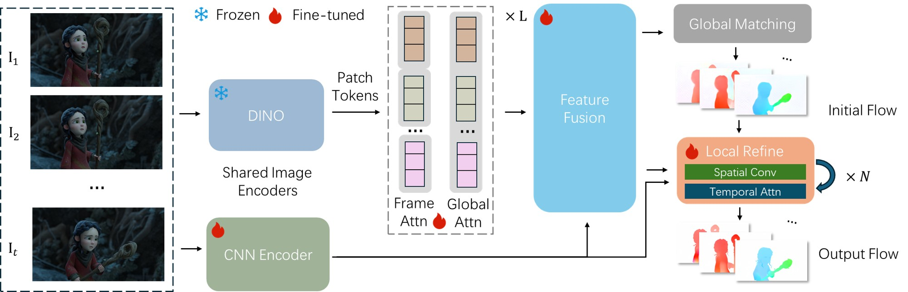

Given an input sequence, a frozen DINO and a trainable CNN extract dense patch tokens and local structural features. Alternating frame and global attention, followed by feature fusion, process these tokens into a globally consistent representation. Pair-wise global matching then computes initial flows. Finally, a recurrent module iteratively refines the initial flows using spatial convolutions and temporal attention for sub-pixel accuracy. Crucially, our design seamlessly processes variable-length inputs and extend to point tracking without architectural modifications.
* Displaying 1/16 points. Note: As a zero-shot tracking application of our flow model, point visibility is not explicitly predicted, resulting in tracking through occlusions.
@article{zhang2026megaflow,
title = {MegaFlow: Zero-Shot Large Displacement Optical Flow},
author = {Zhang, Dingxi and Wang, Fangjinhua and Pollefeys, Marc and Xu, Haofei},
journal = {arXiv preprint arXiv:2603.25739},
year = {2026}
}